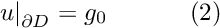
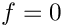
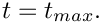

Simulations of time-dependent problem can be very time consuming and it is important to be able to restart simulations, e.g. to continue a run after a system crash, etc. We shall illustrate oomph-lib's dump/restart capabilities by re-visiting the 2D unsteady heat equation discussed in a previous example.
 and initial conditions
|
![\[ \sum_{i=1}^2\frac{\partial^2 u}{\partial x_i^2} = \frac{\partial u}{\partial t} + f\left(x_1,x_2,t\right), \ \ \ \ \ \ \ \ \ \ (1) \]](form_0.png)
![\[ u(x_1,x_2,t=0)=h_0(x_1,x_2), \ \ \ \ \ \ \ \ \ \ (3) \]](form_3.png)
As before, we consider the unforced case, , and choose boundary and initial conditions that are consistent with the exact solution
![\[ u_0(x_1,x_2,t) = e^{-Kt}\sin\left( \sqrt{K} \left( x_1 \cos \Phi + x_2 \sin \Phi\right)\right), \ \ \ \ \ \ \ \ \ \ (4) \]](form_7.png)
where  and
and  are constants, controlling the decay rate of the solution and its spatial orientation, respectively.
are constants, controlling the decay rate of the solution and its spatial orientation, respectively.
The figure below shows a plot of computed and exact solution at a control node as a function of time. The solid lines represent quantities computed during the original simulation; the dashed line shows the corresponding data from a second simulation that was restarted with the restart file generated at timestep 23 of the original simulation.

Most of the driver code for this example is identical to that discussed in the previous example, therefore we only discuss the modifications required to enable the dump and restart operations:
- We use optional command line arguments to specify the name of the restart file. If the code is run without any command line arguments, we start the simulation at time
 and generate the initial conditions as in the previous example
and generate the initial conditions as in the previous example - We add dump and restart functions to the Problem class and call the dump function when post-processing the solution in
doc_solution(...). - We modify the Problem member function
set_initial_condition()
so that the initial conditions are read from the restart file if a restart file was specified on the command line.
Global parameters and functions
The namespace ExactSolnForUnsteadyHeat that stores the problem parameters is identical to that in the previous example.
The driver code
The only change to the main function is that we record the command line arguments and store them in the namespace CommandLineArgs
The rest of the main function is identical to that in the previous example.
The problem class
The problem class contains the two additional member functions
The problem constructor
The problem constructor is identical to that in the previous example.
The problem destructor
The problem destructor is identical to that in the previous example.
Actions before timestep
This function is identical to that in the previous example.
Set initial condition
We start by checking the validity of the command line arguments, accessible via the namespace CommandLineArgs, as only a single command line argument is allowed. If a command line argument is provided, it is interpreted as the name of the restart file. We try to open the file and, if successful, pass the input stream to the restart(...) function, discussed below. If no command line arguments are specified, we generate the initial conditions, essentially as in the
previous example. The only difference is that in the current version of the code, we moved the specification and initialisation of the timestep from the main function into set_initial_condition(). This is because in a restarted simulation, the value of dt must be consistent with that used in the original simulation. If the simulation is restarted, the generic Problem::read(...) function, called by restart(...), automatically initialises the previous timestep; otherwise we have to perform the initialisation ourselves.
Post-processing
The Problem member function doc_solution(...) is identical to that in the previous example, apart from the addition of a call to the new dump_it(...) function, discussed below.
Dumping the solution
The Problem::dump(...) function writes the generic Problem data in ASCII format to the specified output file. The content of the file can therefore be inspected and, if necessary, manipulated before a restart. However, the specific content of the file is generally of little interest – it is written in a format that can be read by the corresponding function Problem::read(...).
Briefly, the dump file contains:
- A flag that indicates if the data was produced by a time-dependent simulation.
- The current value of the "continuous" time, i.e. the value returned by
Problem::time_pt()->time(); - The number of previous timesteps,
dt, stored in theProblem'sTimeobject, and their values. - The values and history values for all
Dataobjects in theProblem, as well as the present and previous coordinates of allNodes.
The "raw data" is augmented by brief comments that facilitate the identification of individual entries.
In the present problem, the generic Problem::dump(...) function is sufficient to record the current state of the simulation, therefore no additional information needs to be added to the dump file. The section Comments and Exercises below contains an exercise that illustrates how to customise the dump function to record additional parameters; the demo code with spatial adaptivity provides another example of a customised dump/restart function.
Reading a solution from disk
Since the restart file was written by the generic Problem::dump(...) function, it can be read back with the generic Problem::read(...) function. If any additional data had been recorded in the restart file, additional read statements could be added here; see Comments and Exercises.
Comments and Exercises
The Problem::dump(...) and Problem::read(...) functions write/read the generic data that is common to all oomph-lib problems. Occasionally, it is necessary to record additional data to re-create the system's state when the simulations is restarted. We will explore this in more detail in another example. Here we provide a brief exercise that illustrates the general idea and addresses a shortcoming of the driver code: Currently the program computes the same number of timesteps, regardless of whether or not the simulation was restarted. If a simulation is restarted, the computation therefore continues past 
Exercises
- Change the
forloop over the fixed number of timesteps in themainfunction to awhileloop that checks if the continuous time, accessible viaProblem::time_pt()->time(), has reached or exceeded . This works because the
. This works because the Problem::dump(...)andProblem::read(...)functions dump and restore the value of the continuous time. - Following this trivial change, the restarted simulation is terminated at the appropriate point but the numbering of the output files begins at 0, making it difficult to merge the results from the original and the restarted simulations. Modify the functions
dump_it(...)andrestart(...)so that they write/read the current label for the output files to/from the restart file.
Hints: (i) You can write to/read from the restart file before callingProblem::dump(...)andProblem::read(...); just make sure you do it in the same order in both functions. (ii) The easiest way to make the label, currently stored in theDocInfoobject in themainfunction, accessible to all member functions in theProblemis to make theDocInfoobject a private data member of theProblemclass.
Source files for this tutorial
- The source files for this tutorial are located in the directory:
demo_drivers/unsteady_heat/two_d_unsteady_heat/ - The driver code is:
demo_drivers/unsteady_heat/two_d_unsteady_heat/two_d_unsteady_heat_restarted.cc
PDF file
A pdf version of this document is available.